Next: Extra features Up: Biogeochemical models Previous: Numerical aspects Contents
The computational structure of the coupled physical-biogeochemical model system implemented here has been designed under consideration of various objectives. In this section a description of the various design related decisions is given. The major objectives are:
Using the same strategy for the biogeochemical module has some problematic implications which are described here. In analogy to the turbulence module, the interface is given via the two subroutines init_bio() and do_bio(). The major difference between the turbulence module and the biogeochemical module in terms of implementation is that in the former the number of variables are known at compilation time and the dimensions are specified at run time where as in the latter both the number of state variables and their dimension are known only at run time. The general interface has to be able to handle not only the different biogeochemical models implemented at present but also to provide a framework for developing future models. There are two major items to address: 1. how to initialise the biogeochemical model and 2. how to select the right biogeochemical model during the time integration and use the selected ordinary differential equation (ODE) solver.
To solve the initialisation problem we have chosen a two-level initialisation
approach. At the first level variables not specific to any of the
biogeochemical
models are initialised. The single most important variable during this
phase is bio_model, which contains the identification number for all
implemented biogeochemical models.
Depending on the value of bio_model, the second level
of initialisation is started. At this level all model specific variables
(such as process rates) are initialised.
The most important variable at the second
level is  (number of state variables).
After this step, the system returns to the first level, and
now all information is available for allocating memory and initialising
all variables. The most important data structure provided to the individual
biogeochemical models will briefly be mentioned here. 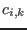
with
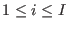 and
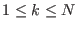 (number of vertical layers)
is a two-dimensional array containing the concentrations of each
variable at each depth.
(number of state variables).
After this step, the system returns to the first level, and
now all information is available for allocating memory and initialising
all variables. The most important data structure provided to the individual
biogeochemical models will briefly be mentioned here. 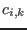
with
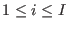 and
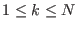 (number of vertical layers)
is a two-dimensional array containing the concentrations of each
variable at each depth.  is
supplied by the individual biogeochemical model and
is
supplied by the individual biogeochemical model and  is transferred in the call to init_bio() from the physical model.
is transferred in the call to init_bio() from the physical model.
After the initialisation, all variables are initialised in a common
data structure where the only link to the specific model is via
bio_model and  . The next step is to design the actual
time integration in such a way that selected biogeochemical model
operates on the
common data structure using the selected ODE solver in a transparent way.
. The next step is to design the actual
time integration in such a way that selected biogeochemical model
operates on the
common data structure using the selected ODE solver in a transparent way.
|
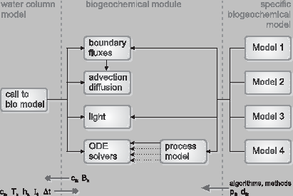
|
Figure 3 shows a sketch of how this is organised in the
model source code.
The sketch should be be read from left to right. At the left side we have
the interface do_bio(), which is the only connection to the
calling program. The next level shows a sequence of steps necessary to do the
time integration. It should be noted that not all biogeochemical
models necessarily
have to execute all the steps, some models do e.g. not need any surface fluxes or short-wave radiation.
For the diffusion/advection part a general subroutine is called
which is also used by
the physical model.
After having calculated 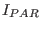 and  (see eqs. (29) and
(
(see eqs. (29) and
( ),
the next step is the step at which the production and destruction terms
(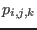 and 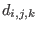)
of the biogeochemical models are calculated. This is done via a call to
ode_solver(). After the call to ode_solver(),
has been updated with the new values of all variables in the
biogeochemical model. Which ODE solver to use is determined during the
initialisation phase (ode_method).
It should be noted
that for some of the solution methods the biogeochemical processes have to
be evaluated more than once. Instead of having ode_solver() being
responsible for calling the chosen biogeochemical model,
an additional subroutine
has been introduced: process_model, is a simple
wrapper routine calling the selected biogeochemical model.
),
the next step is the step at which the production and destruction terms
(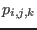 and 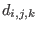)
of the biogeochemical models are calculated. This is done via a call to
ode_solver(). After the call to ode_solver(),
has been updated with the new values of all variables in the
biogeochemical model. Which ODE solver to use is determined during the
initialisation phase (ode_method).
It should be noted
that for some of the solution methods the biogeochemical processes have to
be evaluated more than once. Instead of having ode_solver() being
responsible for calling the chosen biogeochemical model,
an additional subroutine
has been introduced: process_model, is a simple
wrapper routine calling the selected biogeochemical model.
The implementation of this biogeochemical module into three-dimensional models is straight-forward. The 3D model has to take care of storing all three-dimensional state variables and calculate their advection with the mean flow and the horizontal diffusion. Settling, migration, vertical diffusion and the production/destruction processes are calculated by the biogeochemical module which has to be called by means of a loop over all horizontal grid boxes of the 3D model.
This text has been adapted from Burchard et al. (2006).
Karsten Bolding 2012-01-24